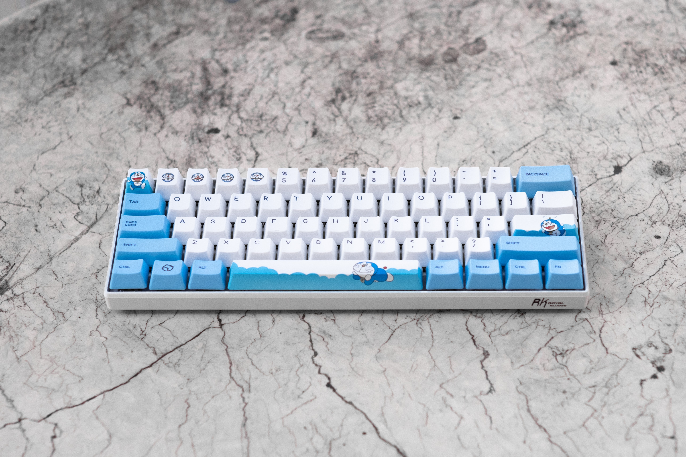
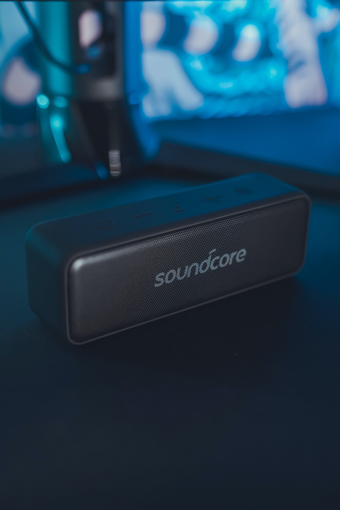

Poco Phone
POCO, formerly known as POCO by Xiaomi and Pocophone, is a Chinese company specialized in smartphones.
View Page

Mechanical Keyboard
Computer keyboards that have switches under each key, rather than the rubber membranes used in most common keyboards. Physical switches give mechanical keyboards a less "mushy" feel — every keypress can be clearly felt, making them perfect for precise and accurate typing.
View Page

Speaker
A loudspeaker (commonly referred to as a speaker or speaker driver) is an electroacoustic transducer that converts an electrical audio signal into a corresponding sound.
View Page